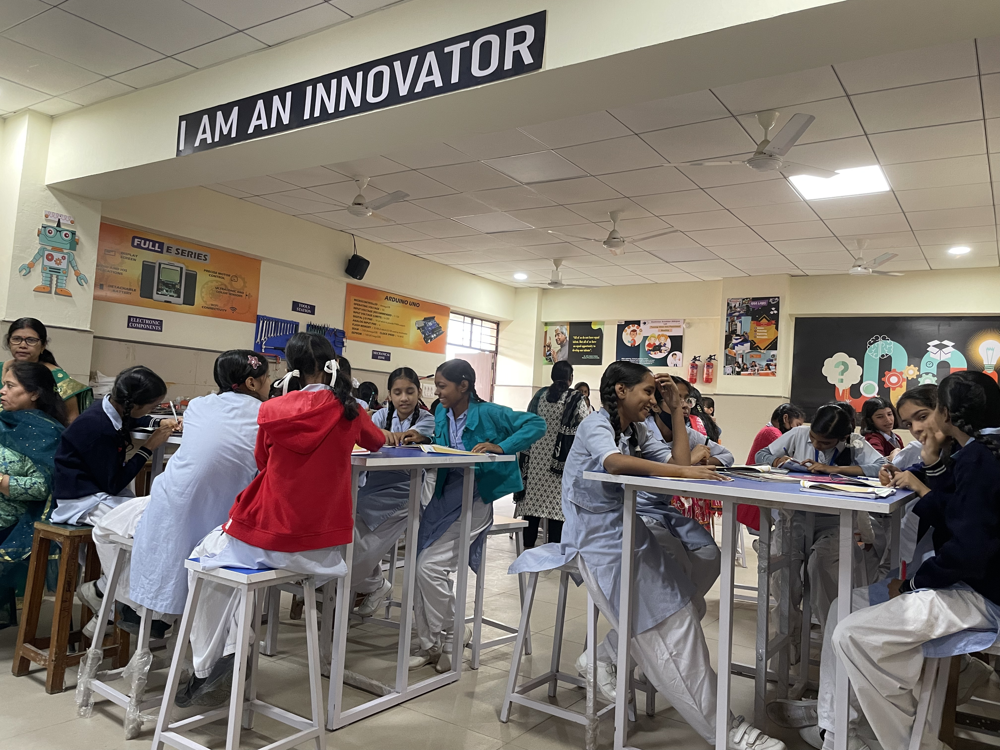

Nao V6 - A new learning opportunity of Robotics and Research
Starting on a research project involving the Nao V6 robot was an memorable experience that allowed us to delve into the world of human-robot interactions. Under the guidance of Dr. Grace Edens and as part of the PAIZ project in collaboration with the University of Oulu, Finland, we had the opportunity to work with this NAO V6 robot. This blog captures our journey, and sessions we conducted at a government school in Delhi, and highlighting our exploration of the Nao V6 robot, the aspects that captivated us, and those that left us wanting more.
Reading IDC Conference
To gain a comprehensive understanding of the current research landscape, we began by immersing ourselves in the papers published in the Interaction Design and Children (IDC) conference . Through literature review, we familiarized ourselves with the prevailing research questions, methods, findings, and implications in the field of children and robot interactions. This foundational knowledge not only shaped our project but also fueled our curiosity to explore uncharted territories.
Selecting the Nao V6 Robot
After thorough research and evaluation, we made an informed decision to move forward with the Nao V6 robot. Despite its limited documentation, this robot stood out due to its wide array of built-in features and coding capabilities. Its frequent usage in academic research further validated our choice. While there were a few disappointments associated with the lack of comprehensive documentation, the potential for exploration and research outweighed these concerns.
Choosing the research Questions
while reading through the research papers, we realised that most of the papers focused on observing and understanding how the children-robot interactions work when in a particular scenario or a location, and how the children interact with the robot. We wanted to explore the other side of the coin, and understand how the children interaction with the robot changes when session is unsupervised and the children decide on what they want to do with the robot. We wanted to understand how the children interact with the robot when they are given the freedom to do so.
Preparing for the Workshop
With anticipation running high, we meticulously prepared for the workshop at a government co-educational school in Ambedkar Nagar, Delhi. This workshop aimed to introduce children to robots and provide them with the freedom to explore their own ideas and needs in utilizing the Nao V6 robot. Given the disadvantaged backgrounds of the children, many of whom had never encountered robots or digital devices, this session held tremendous potential to spark their imagination and curiosity.

Engaging the Children
The workshop commenced with an introduction to robots and their diverse capabilities. Showcasing examples such as Alexa, Nao, Sophia, and robotic toys, we aimed to broaden the children's understanding of the wide range of roles that robots can play in our lives. Witnessing their eagerness to interact with the Nao V6 robot, shake hands, and express their aspirations for its functionalities was truly heartwarming.
Exploring the Robot's Capabilities
As we familiarized ourselves with the Nao V6 robot and its functionalities, we were captivated by its capabilities. From walking and dancing to performing Tai-chi and engaging in conversation, the robot showcased a remarkable range of movements and interactions. While there were moments of disappointment due to certain limitations, particularly influenced by cost constraints, our overall enthusiasm remained intact.
Robot Programming Sessions
The essence of the workshop revolved around empowering the children to code the robot independently and express their creativity. Witnessing their journey from initial hesitations to confidently programming the robot was truly inspiring. We observed their logical thinking, problem-solving skills, and growing confidence as they navigated the coding interface. Despite occasional challenges, such as background noise interfering with speech recognition, the children remained undeterred and continued to explore the possibilities.
Group Dynamics
Organized into three groups, each with its own dynamics and abilities, the children embarked on their programming journey. Group 1, initially unfamiliar with programming, rapidly learned the concept and programmed the robot to perform movements. Although their excitement waned at times, witnessing their progress was a testament to their growing knowledge. Group 2, having observed the activities of Group 1, arrived with eager anticipation and quickly grasped the programming concepts. Their engagement and independence throughout the workshop were truly remarkable. Group 3, equipped with prior programming exposure, demonstrated a high level of confidence and embarked on more complex tasks independently. Their ability to adapt and troubleshoot showcased their innate curiosity and resilience.
Reflections and Lessons Learned
Throughout the workshop, we gained valuable insights into the expectations, aspirations, and needs of the children. Their desire for the robot to perform tasks they observed their parents undertaking, such as household chores, cooking, and walking the dog, highlighted their hopes for easing burdens within their families. Their expectations evolved as they gained familiarity with the robot's capabilities, broadening their ambitions to include storytelling, playing games, and seeking assistance with homework. Witnessing this transformation, we recognized the immense potential of robots to empower children and become valuable companions.
Learnings
Working with the Nao V6 robot for our research project was an unforgettable journey of excitement, discovery, and self-reflection. The workshop not only provided the children with a hands-on experience in robotics and programming but also inspired us as researchers. Witnessing their enthusiasm, creativity, and growing confidence reaffirmed the importance of introducing technology to children from diverse backgrounds.
The Nao V6 robot's capabilities, despite certain limitations, sparked our curiosity and motivated us to delve deeper into the field of human-robot interactions. As we reflect on this journey, we are reminded of the transformative power of technology and its potential to foster innovation, learning, and inclusivity.
